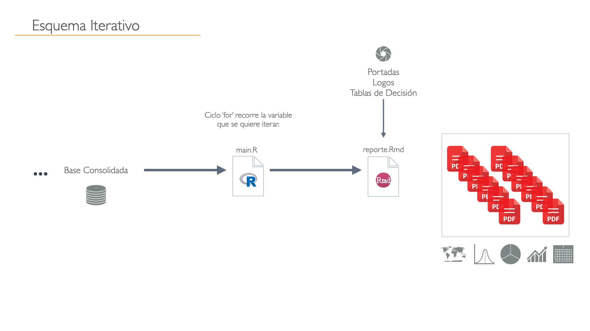

# Lectura de Insumos ------------------------------------------------------
zonas <- readRDS("data/censo/zonas_urb_consolidadas.rds")
# Filtrar provincia -------------------------------------------------------
# unique(zonas$NOM_PROVIN)
provincia <- "SAN ANTONIO"
base_provincial <- zonas %>%
filter(NOM_PROVIN == provincia)
comunas <- unique(base_provincial$NOM_COMUNA)
comunas10 Control de Iteración
10.1 Introducción
En le capítulo de flujo de trabajo Chapter 9 se describe de manera general las fiferetes etapas que ocurren para dentro del proceso de análisis que finaliza en un reporte.
10.2 Esquema para Reporte Iterativo
El esquema iterátivo es más avanzado y está orientado para realizar múltiples reportes similares pero con diferentes unidades de análisis (personas, meses, comunas, sucursales, etc.). Este flujo de trabajo consta de dos elementos escenciales primero un reporte agnóstico o estandar que permita hacer el resultado variable de acuerdo a los datos de entrada pero manteniendo la estructura similar. El segundo elemento es una script en R que llamaremos orquestador o main.R el que será el encargado de orquestar la ejecución de los reportes de forma iterativa.

10.3 Creación de un proyecto
Tenido claro el esquema en que se trabajará se procede a crear un proyecto de acuerdo a lo visto en Section 8.2 con todas las carpetas y subcarpetas que necesitará nuestro proyecto.
10.4 Reporte Agnóstico
Una vez ya creado el proyescto procederemos a crear nuestro reporte agnóstico el cual solo necesitará conocer la variable relevante por la cual se iterará por cada una de ellas.
Este reporte debe poder conectarse con el iterador para poder recibir la variable por la cual va iterar, lo cual realizará a través de un argumento en el encabezado llamado params, y a continuación dispone de un esjemplo:
---
title: "Primer Reporte"
author: "Denis Berroeta"
date: '2023-06-03'
params:
base_com: base_com
personas_media: personas_media
output:
pdf_document:
toc: yes
toc_depth: '4'
html_document: default
subtitle: Curso de Automatización de Reportes con R
editor_options:
chunk_output_type: console
---Mayores referencias de estos parámetros en el capítulo llamado Parameters del libro de Rmarkdown.
10.5 Orquestador
Se define como orquestador al un script que se encargará de iterar por la variable diferenciadora de cada reporte y ordenará el renderizado del archivo .Rmd (reporte agnóstico) por todas las variables que itere.
Para realizar esto desbemos tener muy claro porque variable iterará nuestro reporte y también debemos tener listo nuestro archivo .Rmd que solo necesitará una variable para poder ejecutarse.
A continuación se creará este orquestador que llamaremos main.R y contará de dos etapas principales:
10.5.1 Vector que contiene los elementos que se iterará
Como ejemplo se iterará por la comunas de una provincia cualquiera de Chile, entonces nustro archivo main.R debe contener Lectura de base y filtro por área de estudio
Entonces orqustador iterará por por todas estas comunas, entonce se le debe traspasar a la comuna como parámetro al archivo .Rmd agnóstico
10.5.2 Redenrizado Iterativo
En esta etapa corresponde a la iteración de la variable y la orden de renderizar (knit) a través de la función render, que recibirá como argumentos (params) las variables que se enviarán al reporte agnóstico para que ejecute.
# Iterador ----------------------------------------------------------------
for(comuna in comunas){
print(paste0("Operando sobre la comuna: ", comuna))
# filtrar base provincial
base_comunal <- base_provincial %>%
filter(NOM_COMUNA == comuna)
file_name <- gsub(" ", "_", comuna)
rmarkdown::render("reporte_base/reporte_inicial.Rmd",
output_file = paste0(file_name, ".pdf"),
output_dir = "reportes_salida",
encoding="UTF-8", clean = T, output_format = "pdf_document",
params = list(base_com = base_comunal,
personas_media = pers_mean)) # parametros hacia .Rmd
}